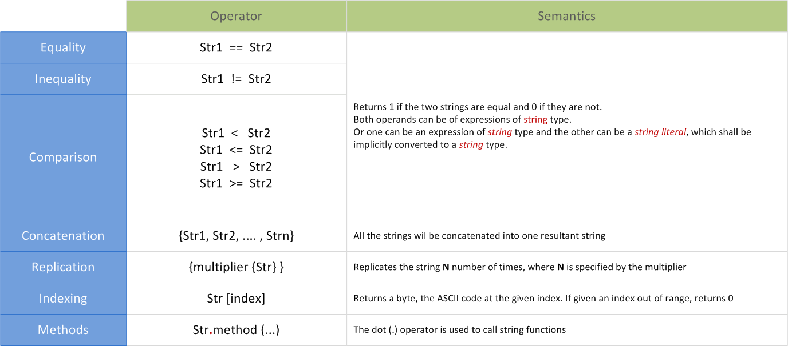
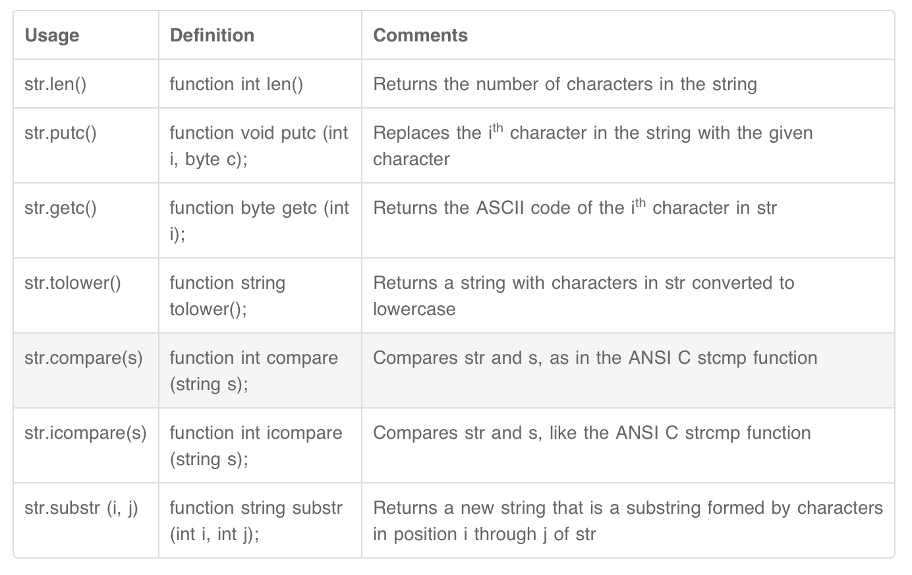
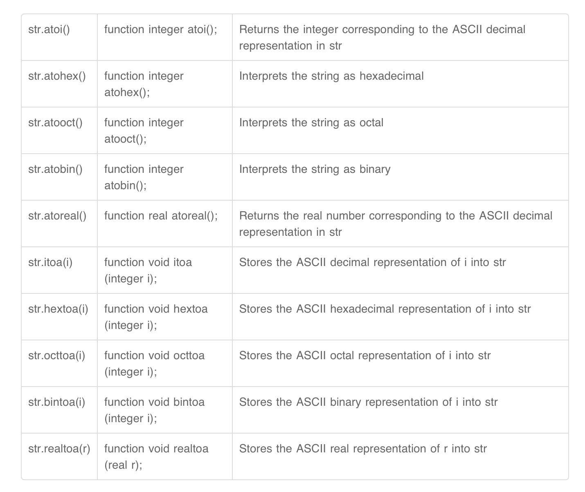
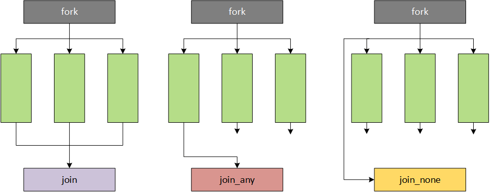

Generator Generates different input stimulus to be driven to DUT Interface Contains design signals that can be driven or monitored Driver Drives the generated stimulus to the design Monitor Monitor the design input-output ports to capture design activity Scoreboard Checks output from the design with expected behavior Environment Contains all the verification components mentioned above Test Contains the environment that can be tweaked with different configuration settings
Data Types
Nets (wire) and Variable(reg)
0 represents a logic zero, or a false condition 1 represents a logic one, or a true condition x represents an unknown logic value (can be zero or one) z represents a high-impedance state
Other data types
Integer
An integer is a general purpose variable of 32-bits wide that can be used for other purposes while modeling hardware and stores integer values.
time
A time variable is unsigned, 64-bits wide and can be used to store simulation time quantities for debugging purposes. A realtime variable simply stores time as a floating point quantity.
real
A real variable can store floating point values and can be assigned the same way as integer and reg.
Verilog Strings
Strings are stored in reg, and the width of the reg variable has to be large enough to hold the string. Each character in a string represents an ASCII value and requires 1 byte. If the size of the variable is smaller than the string, then Verilog truncates the leftmost bits of the string. If the size of the variable is larger than the string, then Verilog adds zeros to the left of the string.
1 2 3
reg [8*11:1] str = "Hello World"; // Variable can store 11 bytes, str = "Hello World" reg [8*5:1] str = "Hello World"; // Variable stores only 5 bytes (rest is truncated), str = "World" reg [8*20:1] str = "Hello World"; // Variable can store 20 bytes (rest is padded with zeros), str = " Hello World"
convert to System Verilog
0 Logic state 0 - element/net is at 0 volts 1 Logic state 1 - element/net is at some value > 0.7 volts x or X Logic state X - element/net has either 0/1 - we just don’t know z or Z Logic state Z - net has high impedence - maybe the wire is not connected and is floating
String
each character contains 8 bits
1 2 3
// "Hello World" has 11 characters and each character requires 8-bits bit [8*17:1] myMessage = "Hello World"; string myMessage2 = "Hello World"; // Uses "string" data type
// Create a structure to store "int" and "real" variables // A name is given to the structure and declared to be a data type so // that this name "s_money" can be used to create structure variables typedef struct { int coins; real dollars; } s_money;
// Create a structure variable of type s_money s_money wallet;
wallet = '{5, 19.75}; // Assign direct values to a structure variable wallet = '{coins:5, dollars:19.75}; // Assign values using member names wallet = '{default:0}; // Assign all elements of structure to 0 wallet = s_money'{int:1, dollars:2}; // Assign default values to all members of that type
// Create a structure that can hold 3 variables and initialize them with 1 struct { int A, B, C; } ABC = '{3{1}}; // A = B = C = 1
// Assigning an array of structures s_money purse [1:0] = '{'{2, 4.25}, '{7,1.5}};
module tb; // The following two representations of fixed arrays are the same // myFIFO and urFIFO have 8 locations where each location can hold an integer value // 0,1 | 0,2 | 0,3 | ... | 0,7 int myFIFO [0:7]; int urFIFO [8];
initial begin myFIFO[5] = 32'hface_cafe; // Assign value to location 5 in 1D array myArray [1][1] = 7; // Assign to location 1,1 in 2D array
// Iterate through each element in the array foreach (myFIFO[i]) $display ("myFIFO[%0d] = 0x%0h", i, myFIFO[i]);
// Iterate through each element in the multidimensional array foreach (myArray[i]) foreach (myArray[i][j]) $display ("myArray[%0d][%0d] = %0d", i, j, myArray[i][j]);
end endmodule
real to int
Real numbers will be converted to integers by rounding the real number to the nearest integer instead of truncating it. If the fractional part is exactly 0.5, it will be rounded away from zero. Explicit conversion can be specified using casting or using system tasks. Directly assigning a real value to an integral type will also round instead of truncate.s
4 and 2 state data types
4 sate data type : reg, wire, logic
2-state data types : bit
Integer :
signed : si = signed’ (ubyte);s
unsigned :
byte : default is signed, can be changed to unsigned
String



Enumeration
name The next number will be associated with name name = C Associates the constant C to name name[N] Generates N named constants : name0, name1, …, nameN-1 name[N] = C First named constant gets value C and subsequent ones are associated to consecutive values name[N:M] First named constant will be nameN and last named constant nameM, where N and M are integers name[N:M] = C First named constant, nameN will get C and subsequent ones are associated to consecutive values until nameM
A one-dimensional packed array is also called as a vector.
A multidimensional packed array is still a set of contiguous bits but are also segmented into smaller groups.
1 2 3
bit [7:0] m_data; // A vector or 1D packed array bit [3:0][7:0] m_data; // A Multidimensional Packed Arrays, 4 bytes bit [2:0][3:0][7:0] m_data; // An MDA, 12 bytes
unpacked array
An unpacked array is used to refer to dimensions declared after the variable name. Unpacked arrays may be fixed-size arrays, dynamic arrays, associative arrays or queues.
\\\In a multidimensional declaration, the dimensions declared before the name vary more faster than the dimensions following the name. bit [1:4] m_var [1:5] // 1:4 varies faster than 1:5 bit m_var2 [1:5] [1:3] // 1:3 varies faster than 1:5 bit [1:3] [1:7] m_var3; // 1:7 varies faster than 1:3
bit [1:3] [1:2] m_var4 [1:7] [0:2] // 1:2 varies most rapidly, followed by 1:3, then 0:2 and then 1:7
经观察具有以下性质：
组合和非组合混合时，名称前面的优先填充，而名字后面的选择名字前面的
当多个[]叠加时，前面的 选择后面的。变化慢的选择变化的。
Dynamic Arrays
A dynamic array is one whose size is not known during compilation, but instead is defined and expanded as needed during runtime. A dynamic array is easily recognized by its empty square brackets [ ].
1 2 3 4
int m_mem []; // Dynamic array, size unknown but it holds integer
function int size (); Returns the current size of the array, 0 if array has not been created function void delete (); Empties the array resulting in a zero-sized array
Associative Arrays
1 2 3 4 5 6 7
int m_data [int]; // Key is of type int, and data is also of type int int m_name [string]; // Key is of type string, and data is of type int
m_name ["Rachel"] = 30; m_name ["Orange"] = 2;
m_data [32'h123] = 3333;
Queues
A queue is a data type where data can be either pushed into the queue or popped from the array. It is easily recognized by the $ symbol inside square brackets [ ].
1 2 3 4
int m_queue [$]; // Unbound queue, no size
m_queue.push_back(23); // Push into the queue int data = m_queue.pop_front(); // Pop from the queue
structure 和 typedef
跟 C 语言差不多，问题不大。
Loops
forever Runs the given set of statements forever repeat Repeats the given set of statements for a given number of times while Repeats the given set of statements as long as given condition is true for Similar to while loop, but more condense and popular form do while Repeats the given set of statements at least once, and then loops as long as condition is true foreach Used mainly to iterate through all elements in an array
Multi threads

for 可以在最后被 disable。disable 以后kill 在运行的子线程。
Interprocess Communication
线程之间的互动一共有3种。
Event
1 2 3 4 5 6 7 8 9 10 11 12 13 14 15 16 17 18
module tb_top; event eventA; // Declare an event handle called "eventA"
initial begin fork waitForTrigger (eventA); // Task waits for eventA to happen #5 ->eventA; // Triggers eventA join end
// The event is passed as an argument to this task. It simply waits for the event // to be triggered task waitForTrigger (event eventA); $display ("[%0t] Waiting for EventA to be triggered", $time); wait (eventA.triggered); $display ("[%0t] EventA has triggered", $time); endtask endmodule
// From TestBench perspective, 'data' is input and 'write' is output modport TB (input data, clk, output enable);
// From DUT perspective, 'data' is output and 'enable' is input modport DUT (output data, input enable, clk); endinterface
clocking blocks
用来给clk 增加延时等，用于仿真等操作。
Signals that are specified inside a clocking block will be sampled/driven with respect to that clock. There can be mulitple clocking blocks in an interface. Note that this is for testbench related signals. You want to control when the TB drives and samples signals from DUT. Solves some part of the race condition, but not entirely. You can also parameterize the skew values.
class is a user-defined datatype, an OOP construct, that can be used to encapsulate data (property) and tasks/functions (methods) which operate on the data.
创建一个class 的array
1 2 3 4 5 6 7 8 9 10
module tb_top; myPacket pkt0 [3];
initial begin for(int i = 0; i < $size (pkt0); i++) begin pkt0[i] = new (); pkt0[i].display (); end end endmodule
Inheritance
新的pkt 继承了myPacket， 用过super关键词可以使用my packet 里面的内容
1 2 3 4 5 6 7 8 9 10 11 12 13 14 15
class networkPkt extends myPacket; bit parity; bit [1:0] crc;
function new (); super.new (); this.parity = 1; this.crc = 3; endfunction
// Declare parameterized class class <name_of_class> #(<parameters>); class Trans #(addr = 32);
// Override class parameter <name_of_class> #(<parameters>) <name_of_inst>; Trans #(.addr(16)) obj;
example:
class stack #(type T = int); T item;
function T add_a (T a); return item + a; endfunction endclass
stack st; // st.item is by default of int type stack #(bit[3:0]) bs; // bs.item will become a 4-bit vector stack #(real) rs; // rs.item will become a real number
constraint c_implicit; // An empty constraint without "extern" is implicit extern constraint c_explicit; // An empty constraint with "extern" is explicit endclass
// This is an external constraint because it is outside // the class-endclass body of the class. The constraint // is reference using :: constraint ABC::c_implicit { mode > 2; }; constraint ABC::c_explicit { mode <= 6; };
class ABC; rand bit[3:0] md_array [][]; // Multidimansional Arrays with unknown size
constraint c_md_array { // First assign the size of the first dimension of md_array md_array.size() == 2;
// Then for each sub-array in the first dimension do the following: foreach (md_array[i]) {
// Randomize size of the sub-array to a value within the range md_array[i].size() inside {[1:5]};
// Iterate over the second dimension foreach (md_array[i][j]) { // Assign constraints for values to the second dimension md_array[i][j] inside {[1:10]}; } } }
function void pre_randomize(); //字面意思 function void post_randomize();
Inline constrains
过于简单了 itm.randomize() with { id == 10; };
Soft constrains
有了soft 关键词以后，就可以被覆盖。
rand case
这个比较有意思。
1 2 3 4 5 6 7 8 9 10
module tb; initial begin for (int i = 0; i < 10; i++) randcase 1 : $display ("Wt 1"); 5 : $display ("Wt 5"); 3 : $display ("Wt 3"); endcase end endmodule
program block
To provide an entry point to the execution of testbenches
To create a container to hold all other testbench data such as tasks, class objects and functions
Avoid race conditions with the design by getting executed during the reactive region of a simulation cycle
1 2 3 4 5 6 7 8 9 10 11
module tb; bit [3:0] mode;
program p1; ... endprogram
program p2; ... endprogram endmodule
Command Line Arguments
1 2 3 4 5 6 7 8 9 10 11 12
module tb; initial begin if ($value$plusargs ("STRING=%s", var1)) $display ("STRING with FS has a value %s", var1);
if ($value$plusargs ("NUMBER=%0d", data)) $display ("NUMBER with %%0d has a value %0d", data);
if ($value$plusargs ("NUMBER=%0h", data)) $display ("NUMBER with %%0h has a value %0d", data); end endmodule
Functional Coverage
coverpoint 是需要覆盖的点。 多个 coverpoint 可以 组成一个covergroup bins are said to be “hit/covered” when the variable reaches the corresponding values. So, the bin featureB is hit when mode takes either 1,2 or 3.
开启sample 的几种方法
1 2 3 4 5 6 7 8 9 10 11 12 13 14 15 16 17 18
class myTrns; rand bit [3:0] mode; rand bit [1:0] key;
// Assert the property assert property (<name_of_property>);
Immediate and Concurrent
Immediate 的情况下，就是在同一个块里面直接 assert。跟 if xx 没啥太大的区别。 assert 还可以把warning 改成 error
1 2 3 4 5 6 7
always @ (<some_event>) begin ... // This is an immediate assertion executed only // at this point in the execution flow $assert(!fifo_empty); // Assert that fifo is not empty at this point ... end
1 2 3 4 5 6 7
// Define a property to specify that an ack should be // returned for every grant within 1:4 clocks property p_ack; @(posedge clk) gnt ##[1:4] ack; endproperty
assert property(p_ack); // Assert the given property is true always